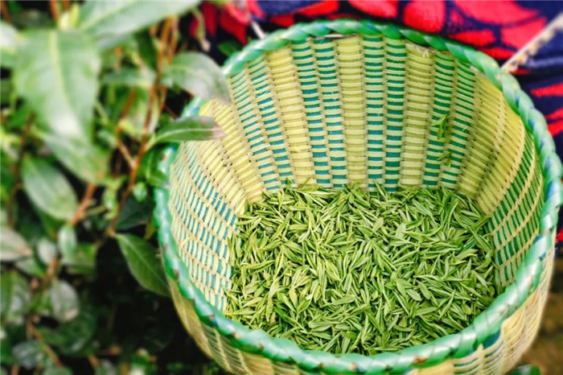

| 无锡毫茶 |  |
历史渊源无锡茶文化历史悠久，早在明代就有惠山寺僧植茶的记载。著名的“天下第二泉”惠山泉更像一颗明珠，为无锡茶文化增添了一道璀璨的光彩。为了发挥和继承无锡丰富的茶文化，无锡农业科研人员经过6年多的辛勤研制，于1979年创制成功了无锡毫茶。无锡毫茶创制成功后，在历届名茶评比中获奖，并远销美、英、加拿大等国家，获得好评。 产品特点无锡毫茶，外形肥壮卷曲，身披茸毫，香高持久，滋味鲜醇，汤色绿而明亮，叶底嫩匀。冲泡后白毫显见，汤色碧绿澄清。 无锡毫茶品质特征：以高产优质的无性系良种茶树的幼嫩茶叶为原料，属于全炒特种高档绿茶。外形纹紧而卷曲，肥壮翠绿，身披茸毫，香高持久，滋味鲜醇，汤色绿而明亮，茶汤晶莹隐翠，叶底嫩匀。冲泡后白毫显见，汤色碧绿澄清，别具风味。若以二泉水冲泡，“无锡茶，二泉水”相得益彰，则更得毫茶之真味。 历史文化清代董诰的复竹炉煮茶图 来无锡访茶不可不去的去处是位于锡惠公园内的天下第二泉和竹炉山房。据《无锡金匮县志》记载，明代惠山寺僧人普珍在惠山山麓植松种茶，明洪武二十八年（1395年），普真请湖州竹工编制了一个烹泉煮茶的竹炉，里面填土，炉心装铜栅，用松树煮二泉水泡茶，招待文人雅士。
|
|
| 返回 | |